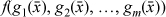

Like many young students, I once became fascinated with prime numbers and tried to find a formula for them. I didn’t know exactly what operations would be considered valid in a “formula,” or exactly what function I was looking for—a formula for the nth prime in terms of n, or in terms of the previous prime(s), or a formula that produces primes but not all of them, or something else. Nevertheless, in spite of these ambiguities, I would like to discuss a little of what is known about this problem. We will see that (a) there are formulas for primes, and (b) none of them are very satisfying.
Much of this subject relates to the present work in that it deals with formulas similar to those of some of our programming tricks, albeit in the domain of real number arithmetic rather than “computer arithmetic.” Let us first review a few highlights from the history of this subject.
In 1640, Fermat conjectured that the formula
Fn = 22n +1
always produces a prime, and numbers of this form have come to be called “Fermat numbers.” It is true that Fn is prime for n ranging from 0 to 4, but Euler found in 1732 that
F5 = 225 + 1 = 641 · 6700417.
(We have seen these factors before in connection with dividing by a constant on a 32-bit machine). Then, F. Landry showed in 1880 that
F6 = 226 + 1 = 274177·67280421310721.
Fn is now known to be composite for many larger values of n, such as all n from 7 to 16 inclusive. For no value of n > 4 is it known to be prime [H&W]. So much for rash conjectures.1
Incidentally, why would Fermat be led to the double exponential? He knew that if m has an odd factor other than 1, then 2m + 1 is composite. For if m = ab with b odd and not equal to 1, then
2ab + 1 = (2a + 1)(2a(b – 1) –2a(b – 2) +2a(b – 3) –...+1.
Knowing this, he must have wondered about 2m + 1 with m not containing any odd factors (other than 1)—that is, m = 2n. He tried a few values of n and found that 22n + 1 seemed to be prime.
Certainly everyone would agree that a polynomial qualifies as a “formula.” One rather amazing polynomial was discovered by Leonhard Euler in 1772. He found that
f(n) = n2 + n + 41
is prime-valued for every n from 0 to 39. His result can be extended. Because
f(–n) = n2 n + 41 = f(n –1),
f(–n) is prime-valued for every n from 1 to 40; that is, f(n) is prime-valued for every n from –1 to –40. Therefore,
f(n –40) = (n –40)2 + (n –40) + 41 = n2 – 79n + 1601
is prime-valued for every n from 0 to 79. (However, it is lacking in aesthetic appeal because it is nonmonotonic and it repeats; that is, for n = 0, 1, ..., 79, n2–79 n + 1601 = 1601, 1523, 1447, ..., 43, 41, 41, 43, ..., 1447, 1523, 1601.)
In spite of this success, it is now known that there is no polynomial f(n) that produces a prime for every n (aside from constant polynomials such as f(n) = 5). In fact, any nontrivial “polynomial in exponentials” is composite infinitely often. More precisely, as stated in [H & W],
THEOREM. If f(n) = p(n, 2n, 3n,..., kn) is a polynomial in its arguments, with integral coefficients, and f(n) → ∞ when n → ∞, then f(n) is composite for an infinity of values of n.
Thus, a formula such as n2 · 2n + 2n3 + 2n + 5 must produce an infinite number of composites. On the other hand, the theorem says nothing about formulas containing terms such as 22n, nn, and n!.
A formula for the nth prime, in terms of n, can be obtained by using the floor function and a magic number
a = 0.203005000700011000013....
The number a is, in decimal, the first prime written in the first place after the decimal point, the second prime written in the next two places, the third prime written in the next three places, and so on. There is always room for the nth prime, because pn < 10n. We will not prove this, except to point out that it is known that there is always a prime between n and 2n (for n ≥ 2), and hence certainly at least one between n and 10n, from which it follows that pn < 10n. The formula for the nth prime is
where we have used the relation 1 + 2 + 3 + ... + n = (n2 + n) / 2. For example,
This is a pretty cheap trick, as it requires knowledge of the result to define a. The formula would be interesting if there were some way to define a independent of the primes, but no one knows of such a definition.
Obviously, this technique can be used to obtain a formula for many sequences, but it begs the question.
C. P. Willans gives the following formula for the nth prime [Will]:
The derivation starts from Wilson’s theorem, which states that p is prime or 1 if and only if (p -1)! = –1(modp). Thus,
is an integer for x prime or x = 1 and is fractional for all composite x. Hence,
Thus, if π(m) denotes2 the number of primes ≤ m,
Observe that π(pn) = n, and furthermore,
π(m)<n, for m <pn, and
π(m)≥n, for m≥pn.
Therefore, the number of values of m from 1 to ∞ for which π(m) <n is pn – 1. That is,
where the summand is a “predicate expression” (0/1-valued).
Because we have a formula for π(m), Equation (3) constitutes a formula for the wth prime as a function of n. But it has two features that might be considered unacceptable: an infinite summation and the use of a “predicate expression,” which is not in standard mathematical usage.
It has been proved that for n ≥ 1 there is at least one prime between n and 2n. Therefore, the number of primes ≤ 2n is at least n— that is, π(2n) ≥ n. Thus, the predicate π(m) < n is 0 for m ≥ 2n, so the upper limit of the summation above can be replaced with 2n.
Willans has a rather clever substitute for the predicate expression. Let
Then, if x < y, 1 ≤y /(1 +x) ≤y, so . Furthermore, if x ≥ y, then 0 <y /(1 + x) < 1, so . Applying the floor function, we have
That is, LT(x, y) is the predicate x < y (for x and y in the given ranges).
Substituting, Equation (3) can be written
Further substituting Equation (2) for π(m) in terms of F(x), and Equation (1) for F(x), gives the formula shown at the beginning of this section.
Willans then gives another formula:
Here, F and π are the functions used in his first formula. Thus, mF(m) = m if m is prime or 1, and 0 otherwise. The third factor in the summand is the predicate π(m) = n. The summand is 0 except for one term, which is the nth prime. For example,
Willans goes on to present another formula for the nth prime that does not use any “nonanalytic”3 functions such as floor and absolute value. He starts by noting that for x = 2, 3, ..., the function
The first part follows from
and x divides (x – 1)! + 1, by Wilson’s theorem. Thus, the predicate “x is prime,” for x ≥ 2, is given by
From this it follows that
This cannot be converted to a formula for pn by the methods used in the first two formulas, because they use the floor function. Instead, Willans suggests the following formula4 for the predicate x <y, for x, y ≥ 1:
Thus, if x < y, e = x (x – 1)...(0)(–1)...(x –(y – 1)) = 0, so that LT(x,y) = sin(π/2) = 1. If x ≥ y, the product does not include 0, so e ≥ l, so that LT(x,y) = sin((π/2) · (an even number)) = 0.
Finally, as in the first of Willans’s formulas,
Written out in full, this is the rather formidable
Willans then gives a formula for pn + 1 in terms of pn:
where f(x) is the predicate “x is composite,” for x ≥ 2; that is,
Alternatively, one could use f(x) = 1 – H(x), to keep the formula free of floor functions.
As an example of this formula, let pn = 7. Then,
C. P. Wormell [Wor] improves on Willans’s formulas by avoiding both trigonometric functions and the floor function. Wormell’s formula can, in principle, be evaluated by a simple computer program that uses only integer arithmetic. The derivation does not use Wilson’s theorem. Wormell starts with, for x ≥ 2,
Thus, the number of primes ≤ m is given by
because the summand is the predicate “x is prime.”
Observe that, for n ≥ 1, a ≥ 0,
Repeating a trick above, the predicate a < n is
Because
we have, upon factoring constants out of summations,
As promised, Wormell’s formula does not use trigonometric functions. However, as he points out, if the powers of -1 were expanded using (-1)n = cos πn, they would reappear.
Let us have a closer look at what Willans and Wormell have done. We postulate the
rules below as defining what we mean by the class of functions that can be represented
by “formulas,” which we will call “formula functions.” Here,  is shorthand for x1, x2,...,xn for any n ≥ 1. The domain of values is the integers ... -2, -1, 0, 1, 2, ....
is shorthand for x1, x2,...,xn for any n ≥ 1. The domain of values is the integers ... -2, -1, 0, 1, 2, ....
1. The constants ... -1, 0, 1, ... are formula functions.
2. The projection functions , for 1≤i≤n, are formula functions.
3. The expressions x+y, x-y, and xy are formula functions, if x and y are.
4. The class of formula functions is closed under composition (substitution). That is,  is a formula function if f and gi are, for i = 1, ..., m.
5. Bounded sums and products, written
are formula functions, if a, b, and f are, and .
Sums and products are required to be bounded to preserve the computational character of formulas; that is, formulas can be evaluated by plugging in values for the arguments and carrying out a finite number of calculations. The reason for the prime on the Σ and Π is explained later in this chapter.
When forming new formula functions using composition, we supply parentheses when necessary according to well-established conventions.
Notice that division is not included in the list above; that’s too complicated to be uncritically accepted as a “formula function.” Even so, the above list is not minimal. It might be fun to find a minimal starting point, but we won’t dwell on that here.
This definition of “formula function” is close to the definition of “elementary function” given in [Cut]. However, the domain of values used in [Cut] is the nonnegative integers (as is usual in recursive function theory). Also, [Cut] requires the bounds on the iterated sum and product to be 0 and x – 1 (where x is a variable), and allows the range to be vacuous (in which case the sum is defined as 0 and the product is defined as 1).
In what follows, we show that the class of formula functions is quite extensive, including most of the functions ordinarily encountered in mathematics. But it doesn’t include every function that is easy to define and has an elementary character.
Our development is slightly encumbered, compared to similar developments in recursive function theory, because here variables can take on negative values. The possibility of a value’s being negative can often be accommodated by simply squaring some expression that would otherwise appear in the first power. Our insistence that iterated sums and products not be vacuous is another slight encumbrance.
Here, a “predicate” is simply a 0/1-valued function, whereas in recursive function theory a predicate is a true/false-valued function, and every predicate has an associated “characteristic function” that is 0/1-valued. We associate 1 with true and 0 with false, as is universally done in programming languages and in computers (in what their and and or instructions do); in logic and recursive function theory, the association is often the opposite.
The following are formula functions:
1. a2 = aa, a3 = aaa, and so on.
2. The predicate a = b:
3. (a≠b) = 1-(a = b).
4. The predicate a ≥ b:
We can now explain why we do not use the convention that a vacuous iterated sum/product has the value 0/1. If we did, we would have such shams as
The comparison predicates are key to everything that follows, and we don’t wish to have them based on anything quite that artificial.
5. (a>b) = (a ≥ b + 1).
6. (a ≤ b) = (b ≥ a).
7. (a<b) = (b>a).
8. |a| = (2(a ≥ 0)-1)a.
9. max(a,b) = (a≥b)(a-b) + b.
10. min(a, b) = (a ≥ b)(b-a) +a.
Now we can fix the iterated sums and products so that they give the conventional and useful result when the range is vacuous.
11.  .
.
12. .
From now on we will use Σ and Π without the prime. All functions thus defined are total (defined for all values of the arguments).
13. .
This gives n! = 1 for n ≤ 0.
In what follows, P and Q denote predicates.
14. .
15.  .
.
16. .
17. .
18. if then else .
19. an = if n ≥ 0 then else 0.
This gives, arbitrarily and perhaps incorrectly for a few cases, the result 0 for n < 0, and the result 1 for 00.
20. .
21. .
∀ is vacuously true; ∃ is vacuously false.
22. .
The value of this expression is the least x in the range m to n such that the predicate is true, or m if the range is vacuous, or n + 1 if the predicate is false throughout the (nonvacuous) range. The operation is called “bounded minimalization” and it is a very powerful tool for developing new formula functions. It is a sort of functional inverse, as illustrated by the next formula. That minimalization can be done by a sum of products is due to Goodstein [Good].
23. .
This is the “integer square root” function, which we define to be 0 for n < 0, just to make it a total function.
24. .
This is the “d divides n” predicate, according to which 0|0 but ¬(0|n) for n≠0.
25. n ÷ d = if n ≥ 0 then (–n ≤min q≤)(n = qd + r) else (n ≤ min q ≤ – n) (n = qd + r).
(n = qd + r).
This is the conventional truncating form of integer division. For d = 0, it gives a result of \n\ + 1, arbitrarily.
26. rem(n, d) = n-(n ÷ d)d.
This is the conventional remainder function. If rem (n, d) is nonzero, it has the sign of the numerator n. If d = 0, the remainder is n.
27. isprime.
28. isprime(i).
(Number of primes ≤n.)
29. pn = (1 ≤ min k ≤2n)(π(k) = n).
30. exponent (p, n) = (0 ≤ min x ≤ |n |)¬(px+1 |n).
This is the exponent of a given prime factor p of n, for n ≥ 1.
31. For n ≥ 0:
32. The nth digit after the decimal point in the decimal expansion of : rem .
Thus, the class of formula functions is quite large. It is limited, though, by the following theorem (at least):
THEOREM. If f is a formula function, then there is a constant k such that
where there are k 2’s.
This can be proved by showing that each application of one of the rules 1–5 (on page 398) preserves the theorem. For example, if (rule 1), then for some h,
where there are h 2’s. Therefore,
because max(|x1|, ..., |xn |) ≥ 0.
For (rule 2),  max (|x1|, ..., |xn |), so the theorem holds with k = 0.
max (|x1|, ..., |xn |), so the theorem holds with k = 0.
For rule 3, let

Then, clearly
Similarly, it can be shown that the theorem holds for f(x, y) = xy.
The proofs that rules 4 and 5 preserve the theorem are a bit tedious, but not difficult, and are omitted.
From the theorem, it follows that the function
is not a formula function, because for sufficiently large x, Equation (4) exceeds the value of the same expression with any fixed number k of 2’s.
For those interested in recursive function theory, we point out that Equation (4) is primitive recursive. Furthermore, it is easy to show directly from the definition of primitive recursion that formula functions are primitive recursive. Therefore, the class of formula functions is a proper subset of the primitive recursive functions. The interested reader is referred to [Cut].
In summary, this section shows that not only is there a formula in elementary functions for the nth prime but also for a good many other functions encountered in mathematics. Furthermore, our “formula functions” are not based on trigonometric functions, the floor function, absolute value, powers of -1, or even division. The only sneaky maneuver is to use the fact that the product of a lot of numbers is 0 if any one of them is 0, which is used in the formula for the predicate a = b.
It is true, however, that once you see them, they are not interesting. The quest for “interesting” formulas for primes should go on. For example, [Rib] cites the amazing theorem of W. H. Mills (1947) that there exists a θ such that the expression
is prime-valued for all n ≥ 1. Actually, there are an infinite number of such values (e.g., 1.3063778838+ and 1.4537508625483+). Furthermore, there is nothing special about the “3”; the theorem is true if the 3 is replaced with any real number ≥2.106 (for different values of θ). Better yet, the 3 can be replaced with 2 if it is true that there is always a prime between n2 and (n + 1)2, which is almost certainly true, but has never been proved. And furthermore, ... well, the interested reader is referred to [Rib] and to [Dud] for more fascinating formulas of this type.
1. Prove that for any non-constant polynomial f(x) with integral coefficients, |f(x) | is composite for an infinite number of values of x.
Hint: If f(x0) = k, consider f(x0 + rk), where r is an integer greater than 1.
2. Prove Wilson’s theorem: An integer p > 1 is prime if and only if
(p- 1)! ≡ -1 (mod p).
Hint: To show that if p is prime, then (p-1)! ≡ –1 (mod p), group the terms of the factorial in pairs (a, b) such that ab ≡ 1 (mod p). Use Theorem MI of Section 10–16 on page 240.
3. Show that if n is a composite integer greater than 4, then
(n-1)!=0 (mod n).
4. Calculate an estimate of the value of θ that satisfies Mills’s theorem, and in the process give an informal proof of the theorem. Assume that for n > 1 there exists a prime between n3 and (n + 1)3. (This depends upon the Riemann Hypothesis, although it has been proved independent of RH for sufficiently large n.)
5. Consider the set of numbers of the form , where a and b are integers. Show that 2 and 3 are primes in this set; that is, they cannot be decomposed into factors in the set unless one of the factors is ±1 (a “unit”). Find a number in the set that has two distinct decompositions into products of primes. (The “fundamental theorem of arithmetic” states that prime decomposition is unique except for units and the order of the factors. Uniqueness does not hold for this set of numbers with multiplication and addition being that of complex numbers. It is an example of a “ring.”).